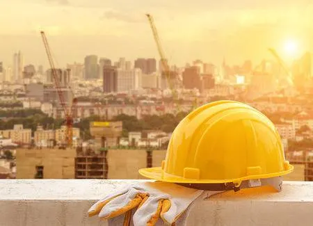

Built to Last
KenCon is fast, productive, and efficient at getting the job done and done right. The owners of KenCon construction not only meet the needs of the client but also of everyone involved! With years of experience, KenCon knows how to do it and do it right! Only KenCon knows the right questions to ask. Such as: Can a world headquarters be collaborative and highly productive, yet still feel warm and welcoming? What type of experience makes shopping joyful and motivates buying? How can we best maximize our land so we have plenty of parking for our customers and plenty of green space? These are just a few of the thousands of questions we’ve been asked and know how to answer. No matter the challenge, working together, we’ll turn your vision into a reality. This attention to quality in commercial construction is matched only by our focus on safety. Simply put, our priorities are yours, and we put your needs above our own. With safety as a priority, we manage fewer delays and bring nothing but the best to the table, day in and day out. No matter the strategic business goal or structure, we will do what we can o help you succeed!